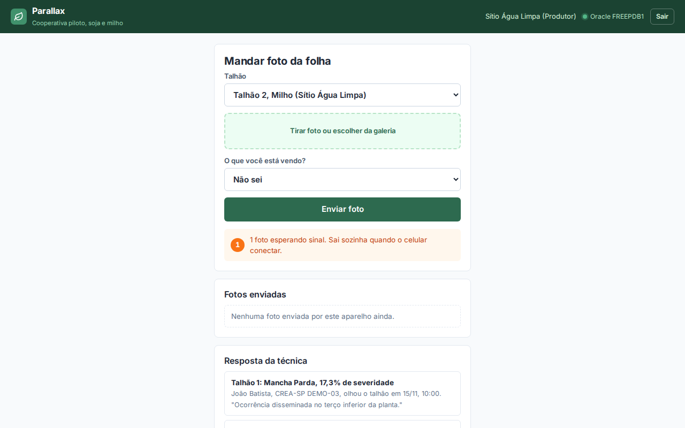
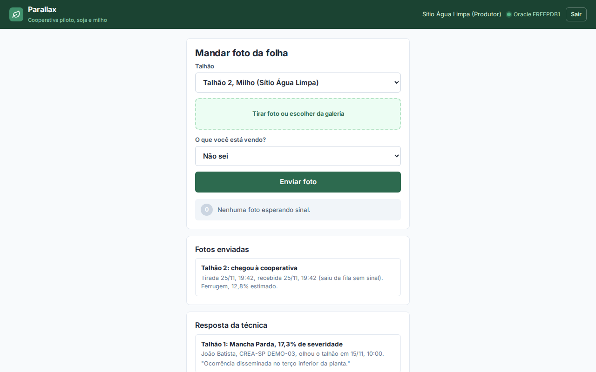
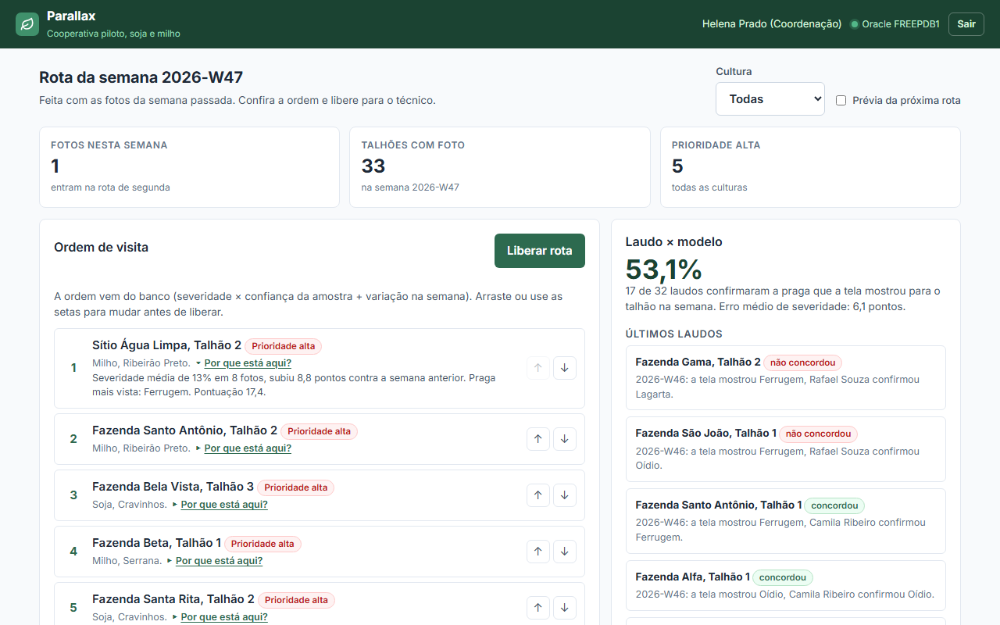
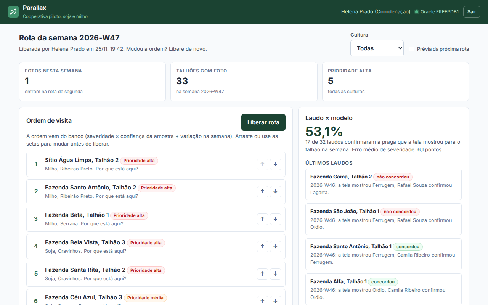
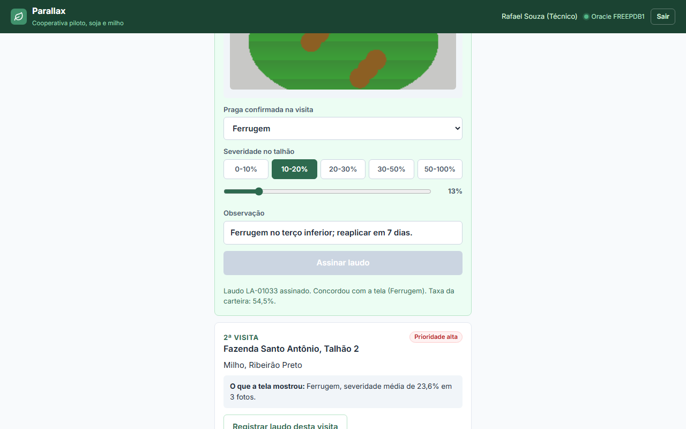
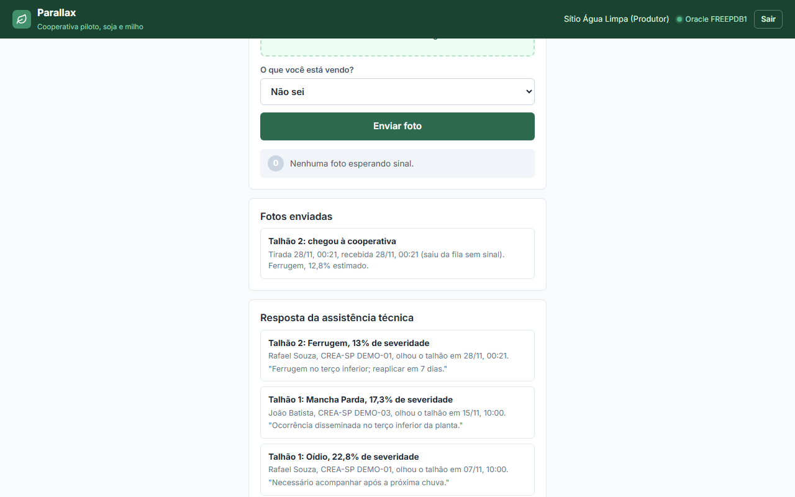

Novembro de 2026.
| Parte do enunciado | Neste documento | No zip |
|---|---|---|
| 1. MVP funcional, com tecnologia Oracle | Seção 2 | pasta do código (fiap-parallax-mvp), README com o passo a passo, prints em docs/prints/, vídeo do ciclo gravado pelo pipeline |
| 2. Teste e validação com 3 usuários | Seção 3 | roteiro em docs/teste-com-usuarios.md |
| 3. Modelo de negócio consolidado | Seção 4 | este documento |
| 4. Estratégia de lançamento | Seção 5 | este documento |
| 5. Pitch final | Seção 6 | pitch em PDF e link do vídeo de até 7 minutos |
O problema (fase 5). No ramo agropecuário, cada técnico de assistência atende em média 106 cooperados (OCB, 2025). A visita vai para quem liga primeiro, e a doença é descoberta quando já tomou parte da lavoura. A cooperativa também não tem como saber se o diagnóstico que chega por foto está certo.
A solução. O Parallax fecha o ciclo da semana. O produtor manda a foto da folha, mesmo sem sinal. O banco ordena as propriedades que precisam de visita. A coordenação confere o porquê de cada posição e libera a rota. O técnico registra o laudo em poucos toques, e o produtor recebe a resposta com nome e registro de quem olhou. A cada laudo, a cooperativa mede se o que o sistema apontou foi o que o técnico encontrou no talhão.
| Passo | Quem | O que acontece | Onde mora a regra |
|---|---|---|---|
| 1 | Produtor | Escolhe o talhão, tira a foto e vê a estimativa de lesão pela cor. Sem sinal, a foto espera na fila do aparelho e sai sozinha quando o sinal volta. | Fila no aparelho (IndexedDB); a foto vai para um BLOB no Oracle, com SHA-256 único |
| 2 | Coordenação | Vê a rota da semana ordenada, com a faixa de prioridade e o porquê de cada talhão em palavras. Filtra a cultura, reordena e libera. | View px_v_rota_semanal |
| 3 | Técnico | Segue a rota na ordem liberada, vê o que a tela mostrou do talhão e assina o laudo. | Procedure px_registrar_laudo |
| 4 | Produtor | Recebe o retorno com o nome e o registro de quem olhou. | Tabela px_laudo |
| 5 | Coordenação | Acompanha a taxa laudo × modelo, no mesmo nível do laudo: o talhão na semana. | View px_v_concordancia |
A Oracle não entra como requisito cumprido no fim: a regra de negócio mora no banco. A ordem da rota, a praga predominante e a concordância são views; o laudo entra por uma procedure que decide a concordância na mesma transação. Assim, outra tela, um relatório ao conselho ou uma segunda cooperativa leem a mesma regra sem reimplementá-la.
| Recurso Oracle | Uso no MVP |
|---|---|
| Oracle Database (Free 23ai, XE 21c e o servidor da FIAP) | Banco do ciclo inteiro. O mesmo schema.sql roda nos três, sem mudança |
| Views da camada refinada | Ordem da rota (severidade × confiança da amostra + variação na semana), praga predominante, concordância |
| PL/SQL | px_registrar_laudo: busca o que a tela mostrou, decide a concordância e grava |
| Restrições CHECK, UNIQUE e FOREIGN KEY | Severidade de 0 a 100, um laudo por talhão na semana, foto sem duplicata, papel válido. O erro do banco chega à tela como veio |
| Sequences e BLOB | Identificadores sem colisão entre técnicos; a foto do produtor guardada no banco e servida só a quem pode ver |
| python-oracledb, modo thin | Driver oficial, sem cliente Oracle instalado: roda em Windows, Mac e Linux |
Prints tirados pelo próprio pipeline, num navegador de verdade, com a aplicação ligada ao Oracle Database Free 23ai. O roteiro confere o que cada tela mostra antes de fotografar.






A cada mudança, o GitHub Actions sobe os dois bancos Oracle em contêiner, monta o schema, carrega os dados e roda os testes: papel errado recebe 403, severidade de 142% é recusada pela restrição do banco (ORA-02290), um segundo laudo no mesmo talhão e semana é recusado (ORA-00001), a foto reenviada pela fila não duplica, e a rota calculada pelo banco reproduz, talhão por talhão, a exportação do Oracle feita na fase 6. Execução: https://github.com/Dsfr62/fiap-parallax-mvp/actions
| Compromisso do roadmap da fase 6 | No MVP |
|---|---|
| Laudo por talhão na semana, comparado com a praga predominante | Feito. Um laudo por talhão na semana, com a concordância decidida no banco contra a praga que a tela mostrou |
| Autenticação por papel | Feito. Produtor, coordenação e técnico, cada um só com a sua parte; senha guardada com PBKDF2 |
| A rota não pode sair com a semana anterior | Feito. As views são calculadas na leitura; a semana de referência vem do relógio do banco |
| Filtro de cultura na rota | Feito |
| Offline real | Feito no app do produtor (fila e telas guardadas no aparelho); no técnico, depois do MVP |
| Upload da foto | Feito, em BLOB no Oracle; o OCI Object Storage entra quando o volume pedir |
| Melhorias do teste de usabilidade da fase 6 | Feito: faixa no lugar do número, explicação ao tocar, último talhão já escolhido, arrastar na rota, ajuste fino da severidade |
| API atrás do ORDS no Autonomous Database; retorno por WhatsApp | Depois do MVP. A API continua fina, com a regra no banco: trocar pelo ORDS não muda a regra |
Três pessoas do público-alvo, uma por papel, usando o MVP de verdade, sem explicação prévia. As tarefas repetem as da fase 6 para comparar: mandar foto sem sinal e ver que chegou, explicar a posição de um talhão, reordenar e liberar a rota, registrar o laudo e achar a resposta do técnico. Para cada tarefa: se concluiu, o tempo, a facilidade de 1 a 5 e a fala da pessoa. Roteiro completo em docs/teste-com-usuarios.md.
Referência da fase 6, para comparar: 6 de 6 tarefas concluídas, facilidade média de 4,3; o laudo levou 19 segundos com nota 5; as dúvidas foram o botão da câmera inativo e o número do score sem explicação, os dois corrigidos neste MVP.
O que mudou desde a fase 5: a proposta de valor passou do diagnóstico para a ordem de visita e o laudo que mede o acerto; a Oracle entrou como parceira de tecnologia; a métrica de acerto passou a ser por talhão na semana.
Quem paga é a cooperativa, por associado contratado, num valor fixo nos 12 meses: a receita não cai na entressafra. Uma cooperativa de 900 associados paga R$ 9.000 por mês (R$ 108 mil por ano), menos que o custo de um agrônomo, para pôr 900 lavouras na rota. A renovação depende de 40% de adoção. Da 2ª safra em diante, o comparativo regional anonimizado (mínimo de 10 propriedades por região) soma R$ 5 por associado.
| Item | Premissa | Por mês |
|---|---|---|
| Receita | 900 associados × R$ 10 | R$ 9.000 |
| Impostos | Simples Nacional, alíquota efetiva de cerca de 10% | −R$ 900 |
| Análise das fotos | 900 × 40% ativos × 6 fotos ao mês, a R$ 0,0199 por análise | −R$ 43 |
| Armazenamento | fotos acumuladas no ano | −R$ 6 |
| Margem de contribuição | 89% da receita | R$ 8.051 |
Custos fixos fora da conta por contrato: equipe (de R$ 22,5 mil no ano 1 a R$ 38,5 mil com a folha plena) e infraestrutura (R$ 500 ao mês no ano 1). O banco do piloto cabe na camada Always Free do Oracle Autonomous Database; o banco pago entra no ano 2, com valor a cotar com a Oracle (estimado abaixo).
| Fim do ano | Cooperativas | Receita mensal | Impostos | IA e fotos | Infra e banco | Equipe | Resultado mensal |
|---|---|---|---|---|---|---|---|
| Ano 1 | 3 | R$ 27.000 | −R$ 2.700 | −R$ 147 | −R$ 500 | −R$ 22.500 | +R$ 1.153 |
| Ano 2 | 8 | R$ 85.500 | −R$ 8.550 | −R$ 392 | −R$ 1.500 | −R$ 38.500 | +R$ 36.558 |
| Ano 3 | 15 | R$ 171.000 | −R$ 25.650 | −R$ 735 | −R$ 3.000 | −R$ 60.000 | +R$ 81.615 |
Premissas: cooperativas de 900 associados a R$ 10; o comparativo regional (+R$ 4.500 por cooperativa) só nas que completaram uma safra (3 no ano 2, 8 no ano 3); impostos de 10% nos anos 1 e 2 e 15% no ano 3, com a faixa maior do Simples; equipe do ano 3 com duas vagas a mais (suporte e desenvolvimento); infraestrutura e banco Oracle pago estimados, a cotar. O caminho até o fim do ano 1 consome cerca de R$ 80 mil de capital; o ponto de equilíbrio com a folha plena é a 5ª cooperativa.
| Indicador | O que mostra | Meta do piloto |
|---|---|---|
| Concordância laudo × modelo (talhão na semana) | Se o sistema aponta o que o técnico encontra | 85% na soja |
| Adoção | Associados contratados que mandaram foto no mês | 40% (condição de renovação) |
| Rota cumprida | Visitas da rota liberada com laudo na semana | 80% |
| Tempo da foto à visita | Dias entre a primeira foto com lesão e o laudo | até 7 dias |
| Receita recorrente e renovação | Saúde do negócio | 3 contratos no ano 1, renovação de 100% no piloto |
Cooperativas agropecuárias de porte médio (500 a 2.000 associados), com departamento técnico próprio e predominância de soja, em região com pressão de ferrugem e com sinal de celular em parte da área. O decisor é a gerência do departamento técnico; quem usa todo dia são os técnicos e a coordenação; o produtor usa o app sem pagar.
| Etapa | O que fazer | Sinal de que deu certo |
|---|---|---|
| 1. Lista curta | Cooperativas do perfil acima no Anuário do Cooperativismo (OCB); contato direto com a gerência técnica, com a apresentação de 7 minutos | 10 conversas marcadas |
| 2. Demonstração com o dado dela | O MVP rodando com 30 dias de fotos da própria cooperativa: a rota que teria saído e por quê | A gerência pede o piloto |
| 3. Piloto pago de uma safra | 100 a 200 associados, no piso de R$ 2.500 ao mês, com metas escritas no contrato: adoção, rota usada toda semana e concordância medida | Metas batidas na safra |
| 4. Contrato anual e caso público | Conversão para todos os associados e o resultado do piloto como caso, com autorização | 2 cooperativas vizinhas pedindo demonstração |
Canais de apoio: as organizações estaduais do cooperativismo, as feiras do setor e a validação agronômica com a Embrapa e o Consórcio Antiferrugem, que dão credibilidade à conversa.
| Alternativa | O que faz bem | O que não resolve para a cooperativa |
|---|---|---|
| Apps gratuitos de diagnóstico por foto (Plantix) | Diagnóstico rápido para o produtor | Atende o produtor isolado e vive de comissão sobre insumo; não ordena a visita nem mede o acerto |
| Plataformas da indústria de insumo (Syngenta, Bayer) | Já estão dentro das cooperativas | O diagnóstico alimenta o funil de venda da própria indústria |
| Planilha e telefone (o que existe hoje) | Custo zero | A visita vai para quem liga primeiro; ninguém mede o acerto |
| Parallax | O painel da carteira inteira para a cooperativa, com a ordem de visita explicada, o laudo que mede o acerto e neutralidade em contrato: o diagnóstico nunca vira gatilho automático de venda. Regra no Oracle, pronta para escalar. | |
| Item pedido | Onde está |
|---|---|
| Problema, solução, mercado | Pitch em PDF; seções 1 e 4 deste documento |
| Demonstração do MVP | Vídeo de até 7 minutos; seção 2 |
| Modelo de negócio, projeções | Pitch em PDF; seção 4 |
| Tecnologia, com a integração Oracle | Pitch em PDF; seção 2 |
| Diferencial, estratégia de crescimento | Pitch em PDF; seção 5 |
| Time | Pitch em PDF; seção 7 |
| Integrante | Na fase 7 |
|---|---|
| Bruno Reis Lago | Estratégia de lançamento |
| Eduardo Sávio Fonseca Resende | MVP, integração com o Oracle e montagem da entrega |
| Gustavo Vieira da Silva | Pitch e vídeo |
| João Guilherme Mazur Ferreira | Modelo de negócio |
| Marina da Conceição Pereira | Teste e validação com usuários |
O código do MVP e o rascunho deste documento foram escritos com a ajuda de um assistente de código com IA (Claude Code), conduzido e revisado pelo grupo. Números de mercado e de custo vêm da pesquisa da fase 5 (Sistema OCB, AnuárioCoop 2026; ConectarAGRO e Anatel; Andav; Embrapa Soja e Consórcio Antiferrugem). Os dados do MVP são sintéticos, da fase 5; nenhuma fala de usuário neste documento é inventada.